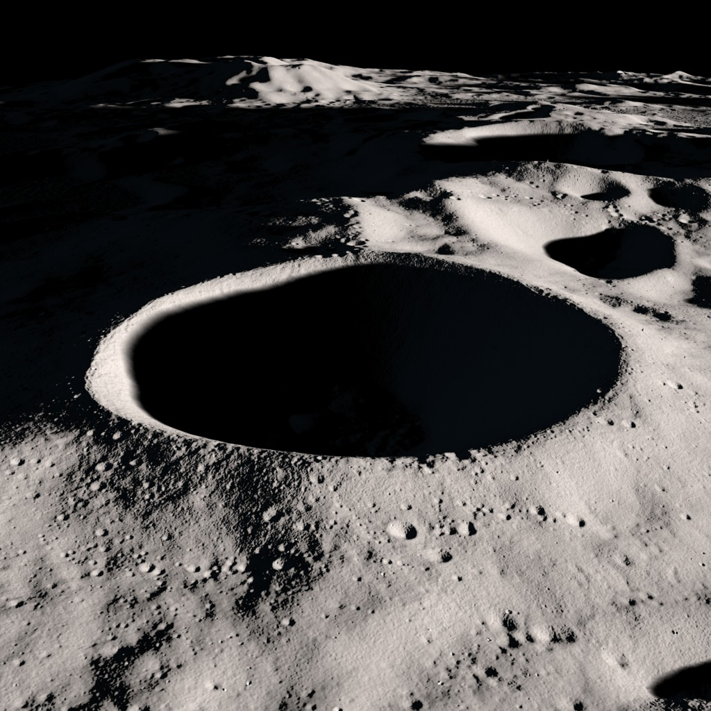
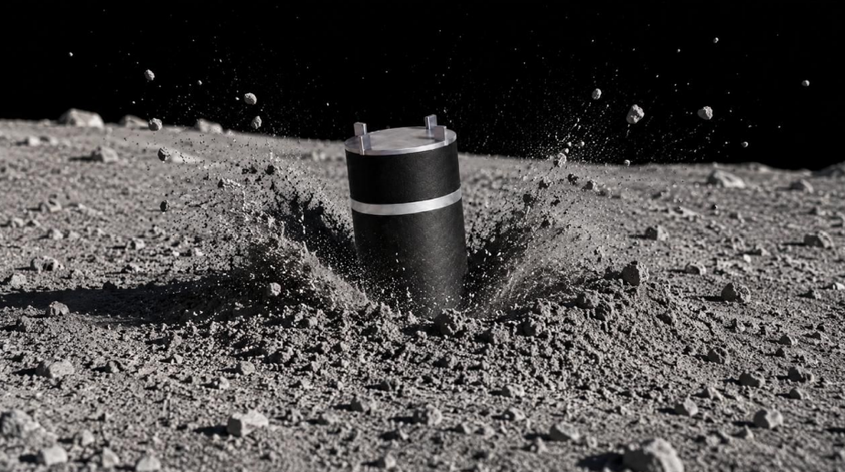

Orbital instruments infer what's below the lunar surface. They don't measure it. Every decision about where to build and what to extract currently rests on kilometre-scale inference, and no mission has measured water in place beneath a permanently shadowed crater. We exist to close that gap.

A probe that survives its own landing, buries itself one to three metres down, and reports. A water sensor that heats a sample and reads the vapour. A three-axis seismometer. An accelerometer that records the penetration itself. Temperature along the body. Built to the shock environment that artillery fuzes and downhole tools have survived for decades, and adapted to the cold.

A hundred probes and a hundred timed impacts, mapping a crater floor in one mission. Each impact is a seismic source of known time and place, recorded by the probes already emplaced. The array is its own active experiment, and the data it returns is the first distributed seismic picture of the lunar subsurface since Apollo.